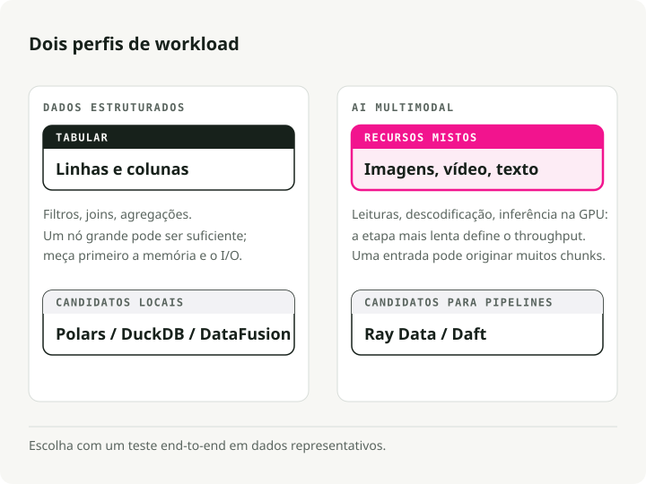
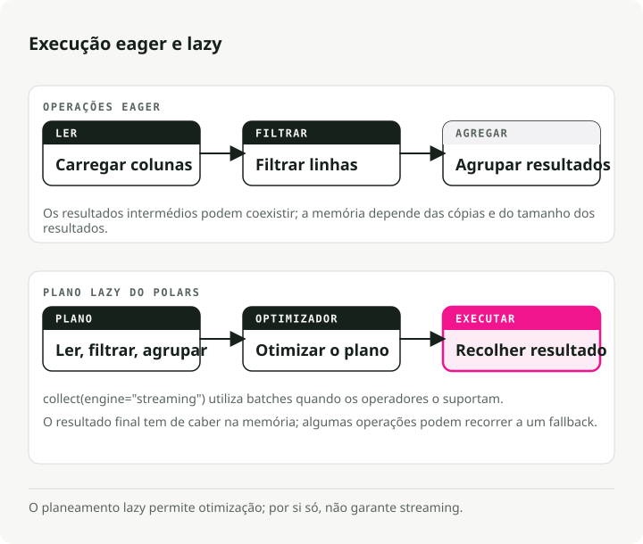
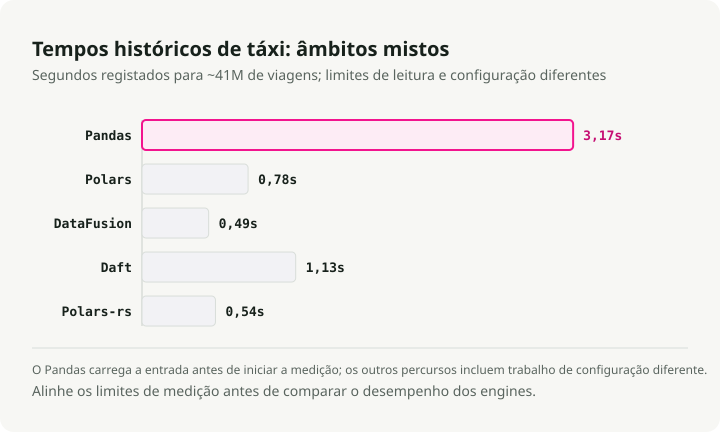
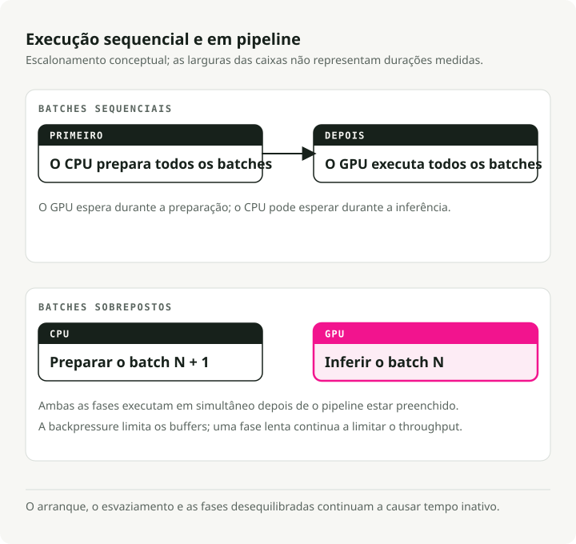
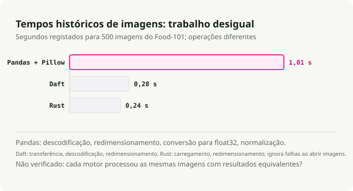
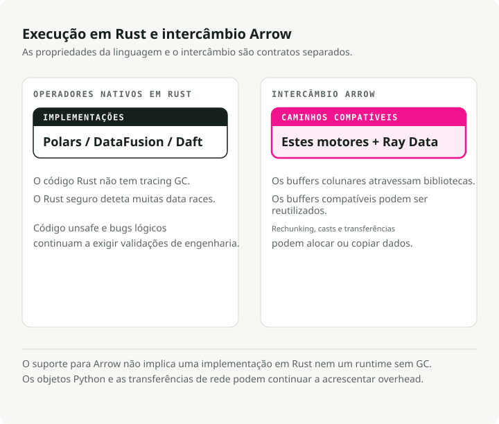
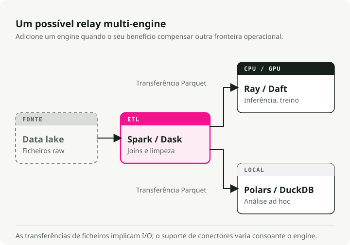
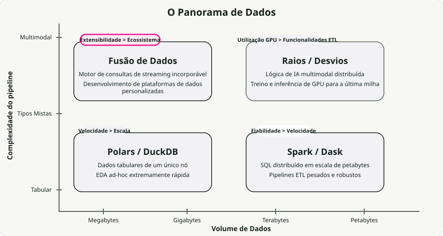

Tradução automática
Este artigo foi traduzido automaticamente a partir da versão original em inglês.
Motores Modernos de Processamento de Dados em Comparação: Polars, DataFusion, Daft, Ray Data, Pandas e Spark
Durante anos, o Pandas tratou do trabalho tabular em memória e o Apache Spark tratou do trabalho distribuído. Essa divisão funcionava bem quando os dados eram estruturados.
As cargas de trabalho modernas já nem sempre são estruturadas. Pipelines de imagem, áudio e vídeo convivem agora com os tabulares e, quando a inferência em GPU entra em cena, o garbage collection da JVM e o GIL do Python deixam de ser meros incómodos e passam a ser o bottleneck. Essa é uma grande parte da razão pela qual uma nova geração de motores construídos sobre Rust e Apache Arrow ganhou tração.
Ao longo do último ano, migrei a maior parte dos meus pipelines de nó único para Polars e quis perceber como ele se compara realmente com o resto desta nova stack. Por isso, fiz benchmarks de Polars, DataFusion, Daft, Ray Data e Spark em datasets reais — viagens de táxi de NYC para a vertente tabular, imagens Food-101 para a vertente multimodal.
Todo o código está no repositório engine-comparison-demo. Faça clone e corra os benchmarks no seu próprio hardware — os seus números serão diferentes dos meus, e esse é o objetivo.
TL;DR: Nos benchmarks mais amigos do marketing, os motores nativos em Rust atingem acelerações de 94x face ao Pandas num único nó. Em cargas reais verá algo mais modesto, mas consistente — Polars e DataFusion são ambos escolhas por omissão sólidas. Para pipelines multimodais, motores com execução em pipeline como Ray Data e Daft correm até 18x mais rápido do que Spark porque mantêm efetivamente as GPUs ocupadas. Não há um vencedor absoluto. A escolha certa depende dos seus dados, da sua escala e de as GPUs estarem ou não no circuito.
Tipos de cargas de trabalho de processamento de dados
Os motores especializam-se, por isso a primeira pergunta a responder é que tipo de carga de trabalho tem realmente. A maior divisão é entre estruturado e multimodal.

Dados estruturados / tabulares. Filtragem, agregação, joins. Limitados por CPU, normalmente em memória. Muito deste trabalho corre em clusters distribuídos que nunca precisaram de ser distribuídos — cerca de 90% das queries processam menos de 1 TB de dados, o que hoje cabe confortavelmente numa única máquina.
IA multimodal. Imagens, áudio, vídeo. Limitada por GPU no lado da inferência, mas o pré-processamento em CPU é o que o penaliza. Os modelos de deep learning consomem dados mais depressa do que as CPUs os conseguem descodificar, por isso numa g6.xlarge padrão (4 CPUs por GPU), a utilização da GPU cai abaixo de 20%. Todo o pipeline acaba limitado pela rapidez com que consegue alimentar a GPU.
Os novos motores visam ambos os cenários. Rust dá-lhes velocidade, Arrow dá-lhes partilha de dados zero-copy entre processos e a execução em streaming permite-lhes tratar datasets maiores do que a RAM.
Parte 1: Processamento em Nó Único
O bottleneck do Pandas não é um bug. É o design. O Pandas carrega ficheiros para RAM de forma eager, copia intermediários em quase todas as operações e mantém-se numa só thread por causa do GIL. Nos benchmarks PDS-H com scale factor 10, o Pandas demora cerca de 365 segundos a concluir uma suite de queries padrão. O motor de streaming do Polars conclui o mesmo trabalho em 3,89 segundos — cerca de 94x mais rápido.

Polars: Processamento de Dados Tabulares
Polars substituiu o Pandas como escolha por omissão para ETL local sério em muitas das equipas com quem falei. Está escrito em Rust e usa execução lazy: em vez de executar cada linha à medida que aparece, constrói um plano de query, otimiza-o (predicate pushdown, projection pruning, column pruning) e depois executa-o em todos os núcleos da CPU em batches de streaming.
A diferença aumenta à medida que os dados crescem. Em scale factor 100 (~100 GB), o motor de streaming do Polars terminou em 23,94 segundos contra 152,27 segundos do seu próprio motor em memória — cerca de 6x mais rápido, em dados maiores do que a RAM.
De engine_comparison_examples.ipynb:
import polars as pl
# scan_parquet reads only the schema — no data loaded yet
q = (
pl.scan_parquet("yellow_tripdata_2024-01.parquet")
.filter(
(pl.col("trip_distance") > 5.0)
& (pl.col("total_amount") > 30.0)
)
.group_by("payment_type")
.agg(
pl.col("total_amount").mean().alias("avg_fare"),
pl.col("trip_distance").mean().alias("avg_distance"),
pl.len().alias("trip_count"),
)
)
# The entire plan is optimized and executed here, in parallel
result = q.collect()
A diferença face ao Pandas não está na API. Está na arquitetura. O Polars constrói primeiro o plano e otimiza todo o pipeline antes de tocar nos dados. O filter é empurrado até ao leitor de Parquet, por isso grupos inteiros de linhas são ignorados. Só as colunas referenciadas na query saem do disco. O Pandas não consegue fazer nada disto — cada linha é executada assim que é analisada e as cópias intermédias aparecem por todo o lado.
Apache DataFusion: Motor de Queries Extensível
Enquanto o Polars é uma biblioteca que usa diretamente, o DataFusion é o motor sobre o qual se constroem outros motores. Alimenta o InfluxDB 3.0, o GreptimeDB e o acelerador Spark Comet da Apple.
Em novembro de 2024, o DataFusion tornou-se o motor de nó único mais rápido para consultar ficheiros Parquet no ClickBench, à frente do DuckDB, chDB e ClickHouse no mesmo hardware. Mais tarde, a equipa da Embucket executou TPC-H com scale factor 1000 (~1 TB) num único nó sobre ele. É um número útil a ter em mente sempre que alguém diz que precisa de um cluster.
De engine_comparison_examples.ipynb:
from datafusion import SessionContext
ctx = SessionContext()
ctx.register_parquet("taxi", "yellow_tripdata_2024-01.parquet")
# SQL executed directly against Parquet — no intermediate copies
df = ctx.sql("""
SELECT payment_type,
COUNT(*) AS trip_count,
AVG(trip_distance) AS avg_distance,
AVG(total_amount) AS avg_fare
FROM taxi
WHERE trip_distance > 5.0 AND total_amount > 30.0
GROUP BY payment_type
ORDER BY trip_count DESC
""")
result = df.to_pandas()
A força do DataFusion está na sua modularidade. As APIs de extensão cobrem catálogos personalizados, table providers, regras de otimização e planos de execução, razão pela qual surge sempre que alguém está a construir uma plataforma de dados personalizada ou a embutir um motor de queries no seu próprio produto.
Daft: Processamento de Dados Multimodais
Daft é o único que leva os dados multimodais realmente a sério. Imagens, áudio, vídeo, embeddings — são tipos reais no DataFrame, não bytes opacos. O Pandas trata uma imagem como um array de bytes, o Spark serializa-a através da JVM, mas o Daft tem expressões nativas em Rust para descodificar imagens, obter URLs e produzir tensores sem um loop Python pelo meio.
De engine_comparison_examples.ipynb:
import daft
df = daft.read_parquet("yellow_tripdata_2024-01.parquet")
result = (
df.where(
(daft.col("trip_distance") > 5.0)
& (daft.col("total_amount") > 30.0)
)
.groupby("payment_type")
.agg(
daft.col("total_amount").mean().alias("avg_fare"),
daft.col("trip_distance").mean().alias("avg_distance"),
daft.col("trip_distance").count().alias("trip_count"),
)
.collect()
)
A API parecer-lhe-á familiar se conhece Pandas, mas o motor é a mesma stack Rust + Arrow que encontra em Polars e DataFusion. Onde o Daft compensa é quando as “linhas” do seu DataFrame são imagens, PDFs ou tensores.
Benchmark: Desempenho em Nó Único
Corri os quatro motores, mais Rust nativo via Polars-rs, em ~41M de viagens de táxi amarelo de NYC para o ano completo de 2024. Resultados completos no repositório de demonstração:

A esta dimensão (~660 MB Parquet), todos os motores modernos são rápidos. O número de 94x de Polars vs. Pandas vem de PDS-H, um benchmark analítico sintético — na minha carga de trabalho com 41M de linhas obtive uma melhoria real e consistente face ao Pandas, mas nem de perto 94x. O resultado mais interessante é que Polars, DataFusion, Daft e Rust puro via Polars-rs ficam todos aproximadamente na mesma gama nesta carga de trabalho. O DataFusion fica ligeiramente à frente em tempo total. O Polars é o mais agradável de escrever e um bom all-rounder.
Parte 2: Lidar com Dados Multimodais
O ETL tabular normalmente reduz dados: filtra, agrega, escreve menos do que lê. Os pipelines de IA multimodal fazem o oposto. Um único caminho de documento pode expandir-se em dezenas de chunks de texto e vetores de embeddings.
O Spark trata imagens e áudio como blobs binários. Tocar-lhes em Python significa um salto JVM-para-Python via Py4J, processamento com Pillow ou OpenCV e depois serialização de volta. Essa ida e volta domina o wall-clock time em muitas cargas reais.
Execução em Pipeline e Utilização de GPU
O Spark paraleliza partições entre núcleos, mas a sua execução por estágios (bulk synchronous) é o problema. Dentro de uma única task, cada passo (download, descodificação, classificação) corre sequencialmente num único núcleo, sem sobreposição assíncrona. E todas as tasks de um estágio têm de terminar antes de o estágio seguinte começar. As GPUs ficam paradas enquanto as CPUs fazem pré-processamento; as CPUs ficam paradas enquanto as GPUs fazem inferência. Cada estágio materializa a sua saída antes de o seguinte começar, o que acrescenta pressão de memória ao resto.

Execução em pipeline é a alternativa. Em vez de correr estágios uns a seguir aos outros, o motor sobrepõe I/O, trabalho de CPU e inferência em GPU, para que apenas o componente mais lento esteja à espera em cada momento.
Benchmark: Processamento de Imagem
Fiz benchmark de processamento de imagem em 500 fotografias reais do dataset Food-101. Resultados do repositório de demonstração:

Polars e DataFusion não aparecem aqui porque não têm operações nativas sobre imagens — o trabalho com imagens cairia para Python sequencial e a comparação não seria justa. Os números que importam: as operações de imagem nativas em Rust do Daft são 3,6x mais rápidas do que Pandas + Pillow, e Rust puro é 4,2x mais rápido do que Pandas em todo o pipeline.
Parte 3: Processamento Distribuído
Quando uma única máquina deixa de ser suficiente, tem de escolher como distribuir o trabalho. É aqui que as diferenças arquiteturais entre motores começam realmente a importar.
Apache Spark
O Spark continua a ser aquilo a que recorreria para ETL tabular à escala de petabytes com shuffles complexos. A tolerância a falhas através de lineage de RDD funciona, o ecossistema é enorme (Databricks, EMR) e joins de vários TB são terreno bem conhecido. As cargas de trabalho de IA são onde falha. As tasks são agendadas em executores JVM que não conhecem GPUs, por isso as GPUs ficam paradas à espera do pré-processamento em CPU.
from pyspark.sql import SparkSession
from pyspark.sql import functions as F
spark = SparkSession.builder \
.appName("TaxiETL") \
.config("spark.sql.adaptive.enabled", "true") \
.getOrCreate()
orders = spark.read.parquet("s3a://lake/taxi/*.parquet")
zones = spark.read.csv("s3a://lake/taxi_zones.csv", header=True)
# Spark excels at this: joining massive tables with a shuffle
result = (
orders
.filter(F.col("trip_distance") > 5.0)
.join(zones, orders.PULocationID == zones.LocationID, "inner")
.groupBy("Borough")
.agg(
F.sum("total_amount").alias("total_revenue"),
F.avg("total_amount").alias("avg_fare"),
)
.orderBy(F.desc("total_revenue"))
)
Ray Data: Utilização de GPU
Ray Data foi desenhado em torno de cargas de trabalho de IA. Em vez das barreiras por estágios do Spark, usa um modelo de streaming que mantém as GPUs alimentadas. A funcionalidade que justifica a sua existência é o agendamento de recursos mistos: pode declarar que um ator quer “1 GPU, 4 CPUs” e outro quer apenas CPUs, e o Ray trata do resto.
A Amazon reportou poupanças de mais de 120 milhões de dólares por ano ao mover cargas de trabalho específicas de Spark para Ray. Os números do PoC foram 91% melhor eficiência de custo e 13x mais dados por hora; em produção, o número fixou-se em 82% melhor eficiência de custo por GiB de input em S3.
import ray
ray.init()
ds = ray.data.read_images("s3://my-bucket/food101/")
class ImageClassifier:
def __init__(self):
import torch
from torchvision.models import resnet18, ResNet18_Weights
self.model = resnet18(weights=ResNet18_Weights.DEFAULT).cuda()
self.model.eval()
self.preprocess = ResNet18_Weights.DEFAULT.transforms()
def __call__(self, batch):
import torch
tensors = torch.stack([
self.preprocess(img) for img in batch["image"]
]).cuda()
with torch.no_grad():
preds = self.model(tensors)
return {
"prediction": preds.argmax(dim=1).cpu().numpy(),
"confidence": preds.max(dim=1).values.cpu().numpy(),
}
# ActorPoolStrategy creates persistent GPU workers
predictions = ds.map_batches(
ImageClassifier,
compute=ray.data.ActorPoolStrategy(size=4),
num_gpus=1,
batch_size=64,
)
predictions.write_parquet("s3://output/predictions/")
Há um detalhe que vale a pena conhecer: à medida que adiciona mais CPUs por GPU, o Ray Data escala enquanto outros motores estagnam. Nos benchmarks da Anyscale, passar de uma razão CPU/GPU de 4:1 para 32:1 deu um speedup de 3x na inferência de imagem, porque os alimentadores em CPU finalmente acompanharam a GPU.
Daft (Distribuído)
O Daft escala horizontalmente através do seu motor Flotilla: um worker Swordfish por nó, com o Flotilla por cima a fazer o agendamento ao nível de todo o cluster. O Swordfish trata da execução local em Rust e faz pipeline de I/O com compute através de streaming em pequenos batches, para que cada nó se mantenha ocupado sem esperar pelo próximo estágio.
Em quatro cargas de trabalho multimodais, o Daft com Flotilla correu 2–18x mais rápido do que Spark. Na mais pesada (deteção de objetos em vídeo com YOLO11n), o Spark demorou mais de 3,5 horas e o Daft terminou em menos de 12 minutos — 18x, sobretudo porque o Spark gasta esse tempo em serialização e barreiras entre estágios.
Uma ressalva: a Anyscale, a empresa por detrás do Ray, publicou os seus próprios benchmarks a mostrar que o Ray Data reduz ou inverte a diferença em instâncias com muito CPU e afinação manual. Neste momento, ambos se vão ultrapassando trimestralmente.
import daft
from daft import col
# Daft's Flotilla engine distributes work across the cluster
df = daft.read_parquet("s3://data-lake/pdf_metadata/*.parquet")
# Download PDFs — Daft parallelizes downloads in Rust
df = df.with_column("pdf_bytes", col("pdf_url").url.download())
# Define a GPU UDF for embedding generation
@daft.udf(return_dtype=daft.DataType.list(daft.DataType.float32()))
class TextEmbedder:
def __init__(self):
from sentence_transformers import SentenceTransformer
self.model = SentenceTransformer("all-MiniLM-L6-v2", device="cuda")
def __call__(self, text_col):
texts = text_col.to_pylist()
embeddings = self.model.encode(texts, batch_size=32)
return [emb.tolist() for emb in embeddings]
# Daft schedules CPU downloads and GPU embeddings simultaneously
df = df.with_column("embedding", TextEmbedder(col("text")))
df.write_parquet("s3://output/embeddings/")
Comparação Direta em Distribuído
| Funcionalidade | Spark | Ray Data | Daft (Flotilla) |
|---|---|---|---|
| Modelo de Execução | Uma task por núcleo, baseado em partições | Tasks e atores em streaming | Um Swordfish por nó, batches em streaming |
| Pontos Fortes | SQL/ETL massivo, tolerância a falhas | Compute heterogéneo, saturação de GPU | Pipeline multimodal, memória limitada |
| Utilização de GPU | Fraca (baseado em estágios, sem sobreposição CPU/GPU) | Excelente (atribuição explícita de recursos) | Excelente (pipeline assíncrono I/O-compute) |
| Esforço de Afinação | Alto (memória do executor, núcleos, partições) | Médio (tamanhos de batch, object store) | Baixo (o motor gere os recursos) |
| Melhor Para | ETL tabular à escala de petabytes | Treino/inferência com CPU+GPU mistos | Carregamento de dados multimodais para PyTorch |
Parte 4: O Papel de Rust e Arrow
Por baixo da competição, a convergência é a história mais interessante. Polars, Daft, DataFusion e o core do Ray partilham a mesma fundação: Apache Arrow para o formato em memória e Rust para a concorrência.

Isto não é apenas elegância arquitetural. A Arrow PyCapsule Interface (protocolo __arrow_c_stream__) permite passar dados entre motores sem serialização: fazer compute em DataFusion, passar o resultado para Polars ou PyArrow a custo zero; fazer pré-processamento multimodal em Daft e alimentar batches Arrow diretamente num PyTorch DataLoader.
from datafusion import SessionContext
import polars as pl
# Compute in DataFusion (Rust-native execution)
ctx = SessionContext()
ctx.register_parquet("events", "events.parquet")
df = ctx.sql("""
SELECT user_id, COUNT(*) as event_count
FROM events WHERE event_type = 'purchase'
GROUP BY user_id HAVING COUNT(*) > 5
""")
# Zero-copy conversion to Arrow, then to Polars
arrow_table = df.to_arrow_table()
df_polars = pl.from_arrow(arrow_table)
# Continue analysis in Polars
result = df_polars.with_columns(
pl.col("event_count").rank().alias("rank")
).sort("rank")
Então porquê Rust em vez da JVM?
-
Sem pausas de garbage collection. Ownership e borrowing substituem o GC, o que significa sem pausas stop-the-world e sem picos de latência imprevisíveis. Os erros de OOM que aparecem à escala em sistemas JVM praticamente desaparecem.
-
Sem imposto de header de objeto. A JVM acrescenta 12–16 bytes de object header a cada objeto. Ao longo de milhares de milhões de pequenos objetos, isso é por si só um orçamento de memória. Rust não paga esse custo.
-
Segurança de threads em tempo de compilação. O sistema de tipos de Rust rejeita data races antes de o binário ser gerado, por isso a execução multithread não vem com a classe habitual de bugs subtis de concorrência.
Combinado com o layout colunar de memória do Arrow, o bottleneck de serialização que consome até 30% dos ciclos de CPU em stacks JVM legadas desaparece.
Parte 5: Adotar Vários Motores
A resposta honesta é que não escolhe um único motor. Compõe vários.

Em produção, isto normalmente parece uma estafeta. Os dados brutos num lake são limpos e sujeitos a joins por Spark (ou Dask se a sua equipa usar apenas Python) para tabelas Parquet ou Delta. Essas tabelas seguem depois para Ray Data ou Daft para o trabalho de última milha — inferência em GPU, geração de embeddings, transformações multimodais — para o qual o Spark nunca foi desenhado. Para análise ad-hoc e desenvolvimento local, Polars e DuckDB dão-lhe feedback imediato sem levantar um cluster.
O que torna esta composição possível são os formatos abertos: Parquet, Delta, Iceberg, Arrow. Todos os motores da stack os leem e escrevem nativamente, por isso a passagem entre estágios é apenas um file path.
Resumo dos Casos de Uso por Motor

| Tarefa | Ferramenta Recomendada | Trade-off |
|---|---|---|
| Análise ad-hoc num portátil | Polars / DuckDB | Velocidade > Escala |
| SQL ETL massivo (petabyte) | Apache Spark | Fiabilidade > Velocidade |
| Escala nativa em Python | Dask | Simplicidade > Otimização |
| Treino de LLMs / visão computacional | Ray Data | Utilização de GPU > Funcionalidades de ETL |
| Carregamento de dados multimodais | Daft | Experiência de desenvolvimento > Ecossistema |
| Construir motores de queries personalizados | DataFusion | Extensibilidade > Funcionalidades prontas a usar |
Escalabilidade Diagonal
Durante muito tempo, a escolha era escalar verticalmente (uma máquina maior) ou horizontalmente (mais máquinas). O Polars Cloud está a fazer algo intermédio, a que chama escalabilidade diagonal: escalar horizontalmente durante a leitura a partir de cloud storage para maximizar I/O e depois colapsar para um único nó grande quando filtros e agregações já reduziram os dados, evitando por completo o shuffle distribuído.
A parte contraintuitiva: uma instância maior e mais cara pode sair mais barata por job porque aumenta a utilização da GPU o suficiente para que o tempo total de execução desça mais depressa do que sobe a tarifa horária.
Experimente Você Mesmo
O repositório de demonstração complementar tem tudo o que precisa para reproduzir estes benchmarks:
# Install dependencies
uv sync
# Run the tabular benchmark (~2.9M NYC taxi trips)
uv run python -m engine_comparison.benchmarks.tabular
# Run the multimodal benchmark (500 real food photos)
uv run python -m engine_comparison.benchmarks.multimodal
# Run native Rust benchmarks (Polars-rs + image crate)
cd rust_benchmark && cargo run --release && cd ..
O repositório também tem notebooks para comparações lado a lado de APIs e configurações Docker Compose para execuções distribuídas locais de Spark, Ray e Daft.
Principais Conclusões
-
Não distribua se não for preciso. Polars e DataFusion tratam até ~1 TB numa única máquina, com speedups consistentes face ao Pandas (e 94x em benchmarks analíticos pesados como PDS-H). Recorra a um cluster quando tiver realmente atingido os limites de um único nó, não antes.
-
Os limites do Pandas são arquiteturais. Execução eager, single-threading, cópias intermédias — são escolhas de design deliberadas que se tornam bottlenecks quando os dados crescem. É a execução lazy com predicate pushdown e column pruning que muda isso.
-
A execução em pipeline vence as barreiras por estágios no trabalho com GPU. Os estágios do Spark deixam as GPUs paradas enquanto as CPUs fazem pré-processamento. Ray Data e Daft sobrepõem I/O, CPU e GPU para que nenhum recurso fique à espera do próximo estágio.
-
Use cada motor para aquilo em que é bom. Spark para ETL de petabytes, Polars e DuckDB para análise ad-hoc, Ray Data para pipelines de treino com GPU, Daft para carregamento de dados multimodais, DataFusion para motores de queries personalizados.
-
Rust + Arrow é a fundação partilhada. Não é coincidência que Polars, DataFusion, Daft e Ray convirjam aqui — elimina pausas de GC, overhead de serialização entre processos e toda uma classe de bugs de concorrência.
Se não tem a certeza por onde começar: Polars numa única máquina, depois Daft ou Ray Data quando as GPUs entrarem em cena. Spark só quando tiver realmente um petabyte.
Referências
Benchmarks e Dados de Desempenho
- Benchmarks PDS-H do Polars - Polars streaming vs. Pandas em SF-10 (94x) e SF-100 (6,4x sobre in-memory)
- Resultados do DataFusion no ClickBench (Nov 2024) - Motor de nó único mais rápido para queries Parquet
- Embucket: TPC-H SF-1000 em DataFusion - TPC-H completo a ~1 TB num único nó
- Migração da Amazon de Spark para Ray - Poupanças de 120 M$/ano, 82% de eficiência de custo em produção
- Benchmarks Flotilla do Daft - 2–18x mais rápido do que Spark em cargas multimodais
- Benchmarks da Anyscale: Ray vs. Daft - Ray Data ~30% de speedup médio em multimodal
Motores e Frameworks
- Polars - Biblioteca DataFrame em Rust com execução lazy
- Apache DataFusion - Motor de queries em Rust embutível (GitHub)
- Daft - DataFrame distribuído nativo para multimodal
- Ray - Framework de compute distribuído para IA (Data Internals)
- Apache Spark - Motor distribuído de ETL e SQL
- DuckDB - Motor SQL analítico in-process
- Dask - Computação paralela nativa em Python
Arquitetura e Ecossistema
- Polars Cloud: Escalabilidade Diagonal - Escalabilidade vertical/horizontal dinâmica
- Arquitetura Flotilla do Daft - Motor distribuído Swordfish + Flotilla
- Apache DataFusion Comet - Acelerador Spark originalmente desenvolvido na Apple
- Apache Arrow - Formato colunar em memória (Flight RPC, PyCapsule Interface)
- InfluxDB 3.0 + DataFusion - Base de dados time-series construída sobre DataFusion
- GreptimeDB - Base de dados de observabilidade que usa DataFusion
Repositório de Demonstração
- engine-comparison-demo - Código complementar para este artigo: benchmarks, notebooks e Docker Compose para Spark/Ray/Daft
Datasets
- NYC Taxi Trip Records - Dados de táxis amarelos da NYC TLC (Parquet, ~2,9M de linhas/mês)
- Dataset Food-101 - 101K imagens de comida da ETH Zurich (Bossard et al., ECCV 2014)